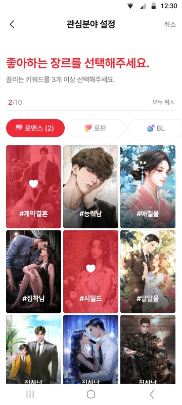
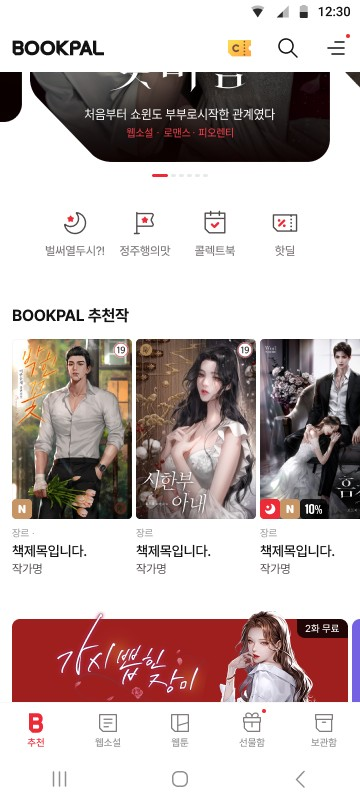
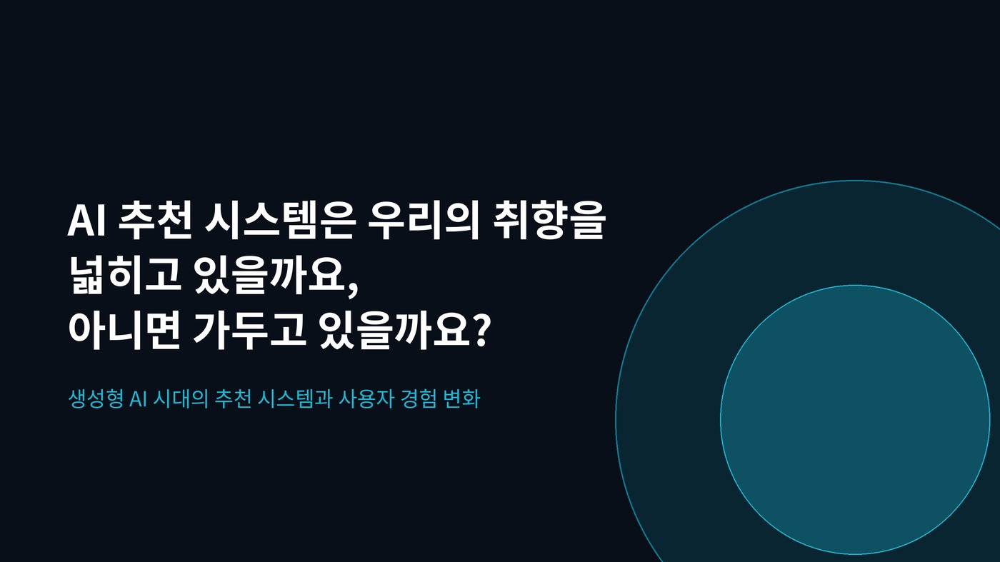
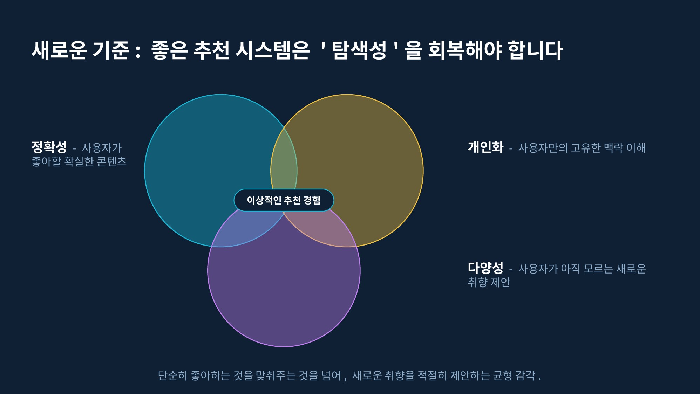
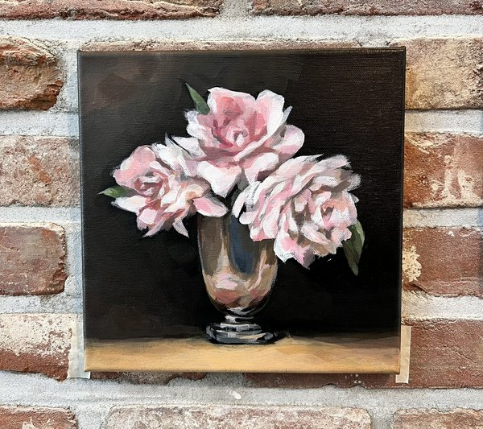
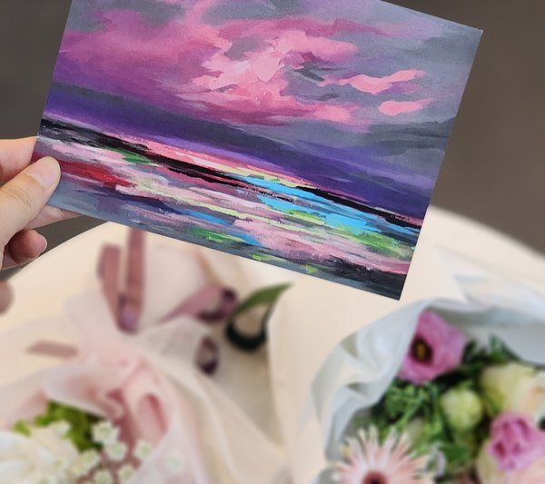
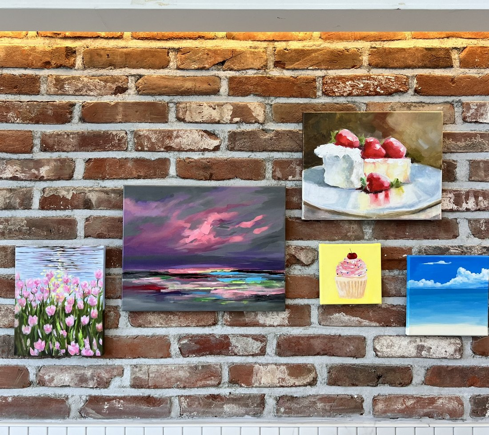
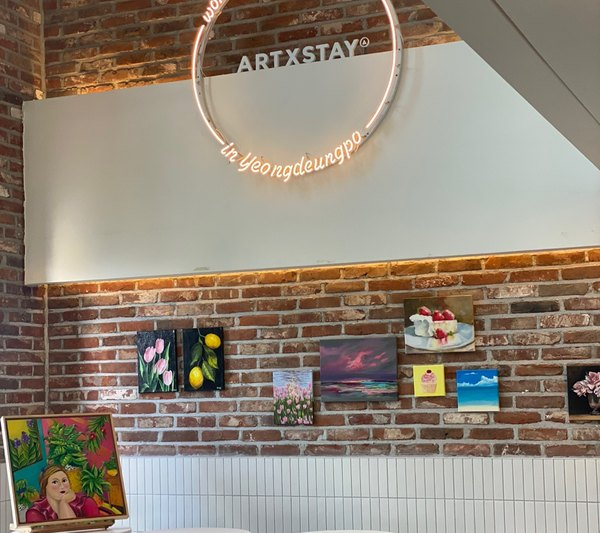
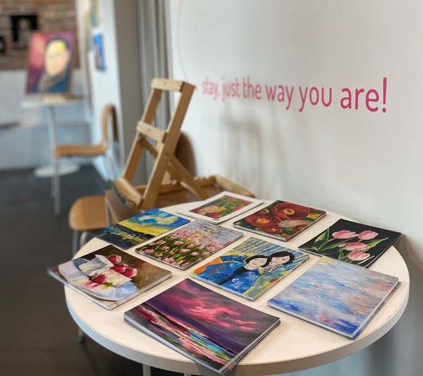

A QUESTION WORTH EXPLORING ✳
AI는 새로운
나를 발견하도록
도울 수 있을까?
개인화 추천을 개발하며 발견한 질문.
미술을 통해 직접 경험한 새로운 선택.
이 두 경험이 하나의 탐구로 이어졌습니다.
THE STARTING POINT
추천할 작품이
사라진다면?
사용자가 좋아하는 장르를 정확히 보여주는 것만으로, 좋은 추천이라고 할 수 있을까?
웹소설 플랫폼에서 사용자 취향 기반 작품 노출 기능을 개발했습니다.
특정 장르의 미열람 작품을 우선 보여주는 구조를 살피던 중, 이용량이 많은 사용자가 해당 장르의 작품을 대부분 읽었다면 추천 후보가 부족해질 수 있다는 점에 주목했습니다.
많이 읽은 사용자에게는
보여줄 새 작품이 부족할 수도 있다.


메인홈을 구현하는
데이터의 연결
사용자가 선택한 관심 장르를 기반으로 추천 작품을 조회하는 백엔드 API를 개발했습니다. 온보딩(관심분야 설정), 메인홈의 추천 작품·이벤트 배너 등 관련 API를 담당했고, 퍼블리셔가 구현한 화면에 데이터를 연동해 사용자별 추천 작품이 노출되도록 했습니다.
북팔 7.0 모바일 서비스 디자인 시안입니다. 관심분야 설정부터 메인홈 및 추천 작품 노출까지의 화면 흐름을 보여줍니다. 담당 범위는 백엔드 API 개발과 퍼블리셔가 구현한 화면의 데이터 연동입니다. 화면에 보이는 추천 작품 영역은 개인화 노출 UI를 보여주지만, 이 이미지 자체가 추천 로직의 개선 효과를 증명하지는 않습니다.
A PRACTICAL CHANGE
질문을
행동으로.
추천 범위를 넓히는 방법을 제안하고, 기획팀과 함께 실제 노출 정책으로 구체화했습니다.
익숙한 장르 안에서
선택 장르 중심의 후보 탐색
인접한 장르까지
기획팀과 협의한 유사 장르 노출
문제 발견 → 개선 제안 → 로직 반영
유사 장르까지 추천 범위를 확장하는 방안을 먼저 제안하고, 협의된 정책을 개발 로직에 반영했습니다.
노출 정책 구체화
기획팀이 대상 장르와 노출 수량을 정하고, 함께 적용 가능한 방식을 조율했습니다.
FROM DEVELOPMENT TO EXPLORATION
좋은 추천은
정확하기만
하면 될까?
추천은 취향을 이해하지만, 동시에 다음 선택에 영향을 줄 수도 있습니다.
대학원에서 ‘AI 추천 시스템은 사용자 취향을 넓힐까, 가둘까?’를 주제로 발표했습니다.
콘텐츠 발견과 탐색 비용 감소라는 장점뿐 아니라 비슷한 콘텐츠가 반복 노출되는 필터 버블의 가능성도 함께 살펴봤습니다.
취향을 발견하다
익숙한 선호를 바탕으로 탐색을 도와준다.
취향에 머무르다
비슷한 선택지만 반복해서 보게 될 수도 있다.
선택지를 넓히다
정확성과 다양성은 어떻게 함께 고려할 수 있을까?

추천은 취향을
넓힐까, 가둘까?
대학원에서 추천 시스템의 편의성과 필터 버블 가능성을 함께 살펴본 발표입니다.
대학원 발표 자료 · 학업 중 탐구
새로운 기준,
탐색성의 회복
정확성과 개인화에 다양성을 더한 균형을 좋은 추천의 기준으로 제안한 장입니다.
대학원 발표 자료 · 8페이지AI 추천 시스템에 관한 발표 자료. 실증 연구나 AI 모델 개발 결과가 아닌 학업 중 탐구 활동입니다.
DISCOVERING THROUGH ART
내가 몰랐던
나의 취향.
미술 선생님의 제안으로 익숙하지 않은 재료와 표현 방식을 시도하면서, 새로운 취향을 발견했습니다.
3년 넘게 유화와 아크릴을 그렸습니다.
정해진 답이 없는 표현을 시도하는 동안 스스로 어떤 색과 방식에 끌리는지 돌아볼 수 있었습니다.
때로는 그날의 기분에 따라 색감이나 붓질이 달라진다고 느꼈습니다.
이는 개인적인 관찰이지 감정 상태를 판별하는 근거는 아닙니다.
그림이 전시 공간으로 이어진 경험
2024년 그룹전 ‘맘대로 잇다’ 1기 참여
영등포 아츠스테이 · 2024.10.03 – 10.11





새로운 선택을 권해주는 누군가가 있었기에,
미처 몰랐던 취향을 발견할 수 있었습니다.
A CONCEPT TO TEST — NOT A FINISHED PRODUCT
AI도 새로운 표현의
시작을 도울 수 있을까?
사용자가 자신의 감정을 표현하고,
평소 시도하지 않았던 미술 활동을 발견하도록 돕는 비의료적 도구를 구상합니다.
기록
오늘의 생각과 느낌을 자유롭게 적어보기
탐색
익숙하지 않은 재료와 표현 활동 제안받기
회고
활동 후 나의 선택과 느낌 돌아보기
기록
탐색
회고
해 보니 어땠나요?
※ 구상을 설명하기 위한 예시이며, 실제 서비스 화면이 아닙니다.
AI가 감정을 진단하거나 치료 효과를 판단하는 서비스가 아닙니다.
사용자가 자신의 경험을 스스로 돌아보도록 돕는 비의료적 표현 활동을 출발점으로 삼습니다.
AI는 기록을 바탕으로 표현 활동을 제안하는 데까지만 쓰고, 활동을 고르고 해석하는 일은 사용자가 합니다.
WHY SK AIGEN?
답을 정하기보다
직접 확인하겠습니다.
아이디어가 그럴듯한지보다,
실제 사용자에게 의미 있는 경험인지 확인하고 싶습니다.
사용자 이해
미술을 시작하고 지속할 때 겪는 어려움 듣기
문제 정의
다양한 배경의 동료들과 가정과 우선순위 검토
초기 구현
감정 기록과 미술 활동 제안의 초기 형태 만들기
반응 검증
실제 피드백을 바탕으로 가설 수정하기
AI는 새로운
나를 발견하도록
도울 수 있을까?